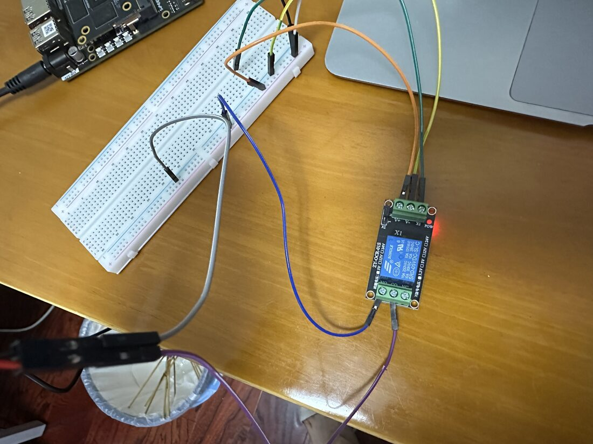

本章实验 · 继电器控制风扇
说明
你能学到什么：经内核申请并改 GPIO；用滞回把「决策」接到真继电器；用改宏证明控制点在软件。
讲义已用 gpioset 跟做过信号链。本实验递进两步：接上风扇负载，并把讲义里的路径写成你自己的 C。
- 工程：
chapters/ch03/code/（板上：~/ruyi-riscv-embedded/ch03-lab/） - 学生文件：
temperature_fan.c（默认make） - 参考实现：
temperature_fan-sol.c（make sol；先自己写，过关后再对照） - 脚：
gpiochip5line 5 / 丝印 IO1_5 - 输入：程序内部假温度（本章不接 DHT22）
make 通过；终端假温度来回；超上限风扇转、低下限风扇停；改阈值后开/关点跟着变。
实验器材
| 东西 | 用途 |
|---|---|
| 荔枝派 4A | 跑 Linux；排针接线 |
| 继电器模块（1 路，5V） | 信号端受 GPIO 控制，触点通断风扇电源 |
| 5V 小风扇 | 负载；红线正极、黑线负极 |
| 面包板 + 杜邦线 | 连接模块 |
本章就这几样。真传感器第四章再接。
荔枝派排针怎么认
板子侧面那排竖针是 20 针排针。信号脚高电平约 1.8V；本课光耦继电器可直连。
| 排针上的字 | 本课用途 |
|---|---|
| 5V | 继电器线圈；经继电器给风扇供电 |
| GND | 共地 |
| IO1_5 | 继电器信号脚（默认） |
| IO1_6 | 备用（第四章 DHT22） |

chapters/ch03/manuals/lpi4a-wiki-assets/io_map.png。以文档图为准；早期板丝印可能不准。认脚认丝印；(chip, line) 用运行时核对。
接线总表
先认丝印，再接线。丝印与表不完全一致时，以实物丝印为准，逻辑按下表角色对应。
A. 继电器（信号 + 供电）
| 从 | 到 | 说明 |
|---|---|---|
| 排针 IO1_5 | 继电器信号脚 IN / X1 | GPIO 直连 |
| 排针 5V | 继电器 V+ / VCC | 线圈要 5V |
| 排针 GND | 继电器 V- / GND | 共地，必接 |
跳线帽拨到 H（高电平有效）。

B. 风扇（走继电器触点）
| 接法 | 说明 |
|---|---|
| 排针 5V → 继电器 NO（常开） | 平时断开 |
| 继电器 COM → 风扇红线 | 吸合后红线才有电 |
| 风扇黑线 → 排针 GND | 负极回地 |
排针 5V ──► [继电器 NO]──(吸合时接通)──[COM]──► 风扇红线 排针 GND ──────────────────────────────────────► 风扇黑线 排针 IO1_5 ──► 继电器 IN / X1（直连） 排针 5V ──► 继电器 V+ 排针 GND ──► 继电器 V-
步骤 1：接线
- 接线前断开开发板电源。
- 按总表：先 GND（共地），再 5V，再信号线 IO1_5 → IN，最后接风扇。
- 确认跳线帽在 H；没碰到 Fan Power 白色插座。
- 再上电。
本步成功判据：继电器电源指示灯亮；未触发时风扇不转；能指着线说出「地 / 信号 / 风扇回路」。
步骤 2：实现三个函数
打开 temperature_fan.c。脚手架已给出宏、main 调用顺序、信号收尾；只改标了 STUDENT TODO 的区块——三个函数的原型与实现都写在 main 上方。
先直接 make：应看到类似 implicit declaration of function 'line_request'——说明 main 在等你补函数。这是预期起点。
你要写的契约
/* 申请一根脚；direction 为 OUTPUT 时立刻置 val（0 或 1） * 成功返回 request 指针；失败返回 NULL。 * 全局变量 chip 已由 main 打开，可直接用。 */ struct gpiod_line_request *line_request(unsigned int offset, int direction, int val); /* 写继电器信号端：on 非 0 → 吸合；on 为 0 → 释放。 * 用全局 fan_req 与宏 FAN_LINE；成功时打印 [INFO] fan ON/OFF。 */ void fan_set(int on); /* 滞回决策：只改 *fan_on，不要在这里调 gpiod。 * temp_c > T_HIGH → *fan_on = 1 * temp_c < T_LOW → *fan_on = 0 * 中间区间 → 保持 *fan_on 原值 * fan_on 为空指针时直接返回。 */ void fan_decide(float temp_c, int *fan_on);
写的时候要想清楚
line_request：为什么申请输出时要把初值设成 0，而不是先申请再随便写？fan_set与fan_decide为什么拆开？决策函数里直接set_value会怎样？- 中间区间「保持」时，
main为什么用prev比较后再调用fan_set？ - 退出前脚手架已调用
fan_set(0)：若你的fan_set写错，Ctrl+C 后风扇可能一直转——现象会指回你的实现。
gpiod_chip_request_lines → gpiod_line_request_set_value。consumer 名字建议 "temperature_fan"，方便 gpioinfo 认人。
temperature_fan-sol.c。建议过关后再打开；卡住超过一刻钟再对照某一函数即可。
步骤 3：编译运行
主路径：在 x86 Linux 上激活第一章的 venv-gnu-ruyisdk，交叉编译后再拷到荔枝派运行。同一份 Makefile 在荔枝派上会自动改用板载 gcc（若主机交叉因缺少 libgpiod 失败，可直接在荔枝派上 make）。
# —— 在 x86 Linux 上 —— $ . ~/venv-gnu-ruyisdk/bin/ruyi-activate $ cd chapters/ch03/code $ make clean && make sol $ file temperature_fan-sol # 期望含 RISC-V；若报找不到 gpiod.h，改到荔枝派上编译（见下） # —— 在荔枝派上（源码目录）—— $ cd ~/ruyi-riscv-embedded/ch03-lab $ make clean && make sol $ sudo ./temperature_fan-sol
若讲义跟做留下的 gpioset 仍占着 line 5，先 sudo pkill -x gpioset。
sudo？/dev/gpiochip* 默认归 root。
助教或自检可用 make sol && sudo ./temperature_fan-sol 跑参考实现。
步骤 4：模拟温度控制验收
- 启动打印
fake temperature: T_HIGH=28.0 T_LOW=26.0，并说明继电器在 IO1_5。 - 周期性打印
[INFO] temp=…C fan=OFF|ON，假温度在 24~31 之间来回。 - 升过 28°C →
[INFO] fan ON，继电器吸合，风扇转。 - 降到 26°C 以下 →
[INFO] fan OFF，风扇停。 - 中间区间（26~28）保持上一状态。
停程序：SSH 里 Ctrl+C。
fan_set(0) 再释放。要退出后也更稳，可在 X1 到 GND 加 10kΩ 下拉。
本步成功判据：能演示超温开 / 降温关；Ctrl+C 后风扇停转（或靠下拉稳定关断）。
步骤 5：改阈值
改 temperature_fan.c 顶部 T_HIGH / T_LOW（例如 27 / 25），重新 make 再跑，观察开/关温度点变化。也可加大 STEP_DELTA 让扫温更快。
本步要证明的：阈值是你程序里的常量；硬件只跟着高低电平走。
常见故障
| 现象 | 先查什么 |
|---|---|
implicit declaration / 编译不过 | 三个函数是否写在 main 上方？签名是否与契约一致？ |
程序报 Permission denied | sudo ./temperature_fan |
| busy / 打不开 gpiochip | 残留 gpioset？sudo pkill -x gpioset |
| 程序在跑，风扇完全不动 | 共地？继电器 5V？跳帽 H？NO/COM？信号是否 IO1_5？ |
| 置 1 没反应 | 排针用 gpiochip5；sudo cat /sys/kernel/debug/gpio 看是否 out hi |
| Ctrl+C 后风扇还在转 | fan_set(0) 是否真的写了低电平？ |
| 继电器灯亮，风扇不转 | 风扇 5V 回路：NO–COM–红线–黑线回 GND |
| 中间区间乱抖 | fan_decide 是否在中间误改了 *fan_on？ |
| file 显示 x86-64 | 检查 CROSS_COMPILE / PATH；或板端原生编译 |
取证顺序：先看编译与你的三函数 → 再 chip/占用 → 再接线。
验收表
| 验收项 | 通过条件 | □ |
|---|---|---|
| 接线 | IO1_5 直连继电器 IN；继电器 5V/GND；风扇走 NO–COM；跳帽 H；共地 | |
| 自己写的函数 | line_request / fan_set / fan_decide 在学生文件中实现；make 通过 | |
| 运行 | sudo ./temperature_fan 打印假温度 | |
| 控制 | 超 28°C 开、低于 26°C 关，风扇启动或停止 | |
| 改阈值 | 改过 T_HIGH/T_LOW（或 STEP_DELTA）并观察到开/关点变化 |
记录表（自填）
| 项 | 你的结果 |
|---|---|
| 继电器脚（chip + line / 丝印） | gpiochip5 line 5 / IO1_5 |
| T_HIGH / T_LOW（改后） | |
| 风扇转时继电器工作灯 | |
| 实测哪根脚拉不高（若有） |